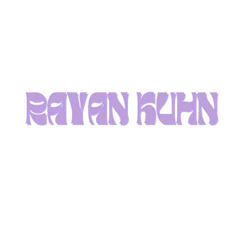

En reconversion dans le développement informatique
Suite à un parcours dans le milieu de la banque et du courtage en prêt immobilier, je cherche à me réorienter dans le domaine de l’informatique, et plus précisément dans le secteur du développement.
Ce portfolio a pour but de présenter mon parcours et toutes mes futures réalisations.